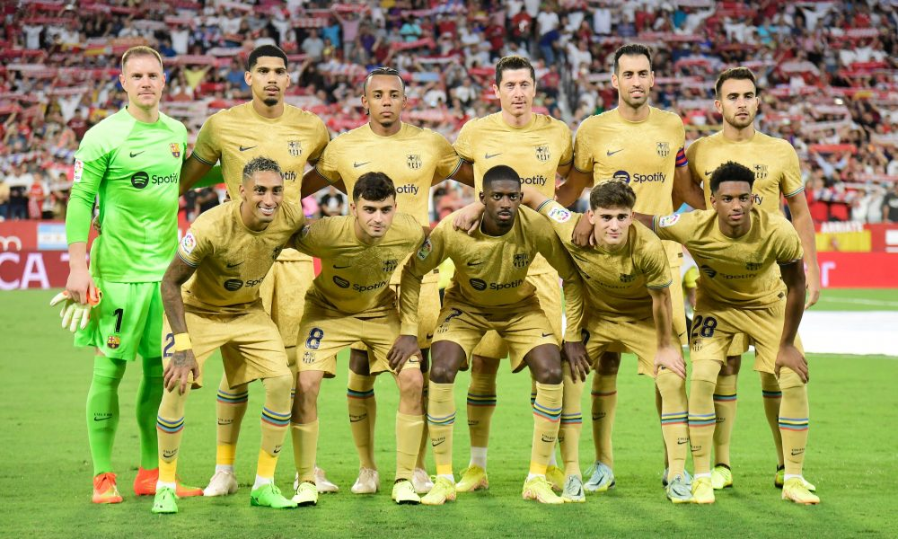

The 2022/23 Season
 I would like to discuss the performance of football club FC Barcelona since the beginning of the 2022/23 season. The blaugrana have managed to gain 16 out 18 possible points in the 6 la liga matches defeating all opponents except Rayo Vallecano which resulted in a draw and captain Sergio Busquest being sent off.
The Catalans' UEFA Champions League campaign has been somewhat of a bittersweet experience with a stunning 5-1 victory over FC Viktoria Plzeň but a 2-0 defeat when La Liga top scorer Robert Lawendowski's return to the Allianz Arena. The squad looks to continue is impressive form when they travel to the Iberostar Stadium to face 10th place Mallorca in La Liga on Saturday and Inter Milan at San Siro in the Champion's League on Tuesday.